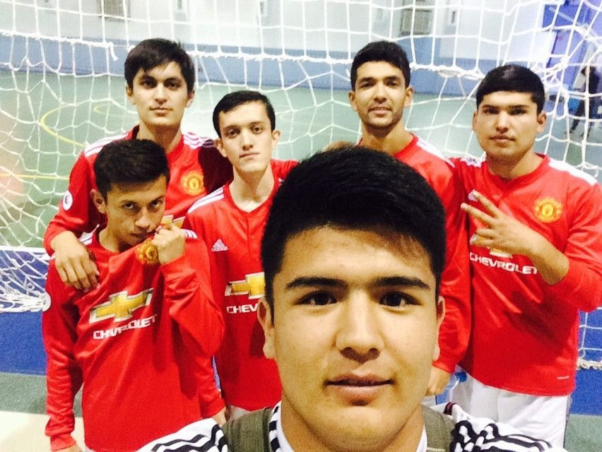
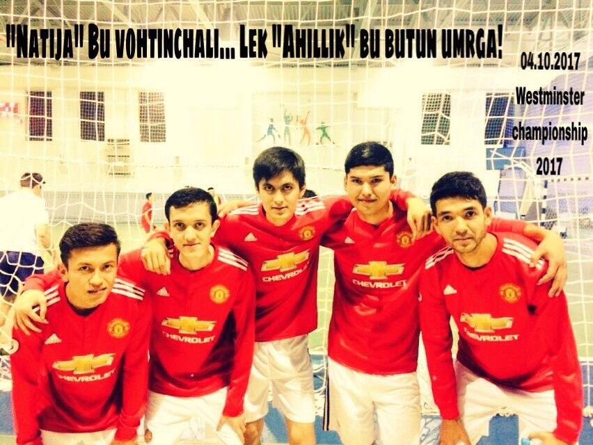
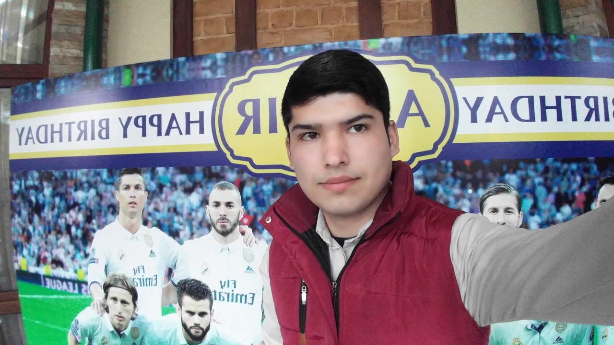

Introducton to My Hobby
Why soccer is my hobby?
Depending on each personality, people have various hobbies that they do for fun or relaxation.
For example, they can be physical and mental activities like cicling, jogging, skateboarding or regarding mental activities such as playing computer games, reading and movies so on.
Regarding my pasttime is soccer. When it comes to my hobby, I grew up with soccer ball from my childhood. My mom told me when I was a two-year kid, I liked kick the ball around and have fun with it. Untill today, soccer is being my favorite hobby.
Recommedations to people who never done before:
If you are looking for a new hobby, we recommend you soccer. It is a fun sport that boosts your strength, speed and can help you in making new friends. Some of you will become so addicted to soccer that this will be your only topic in the future.
|

|

|

|
{kind=link}
{kind=link}
{kind=link}

|
:focal(1678x479:1680x477)/origin-imgresizer.eurosport.com/2018/04/04/2306175-48022290-2560-1440.jpg)
Champions League. Image credit: Getty Images |

|